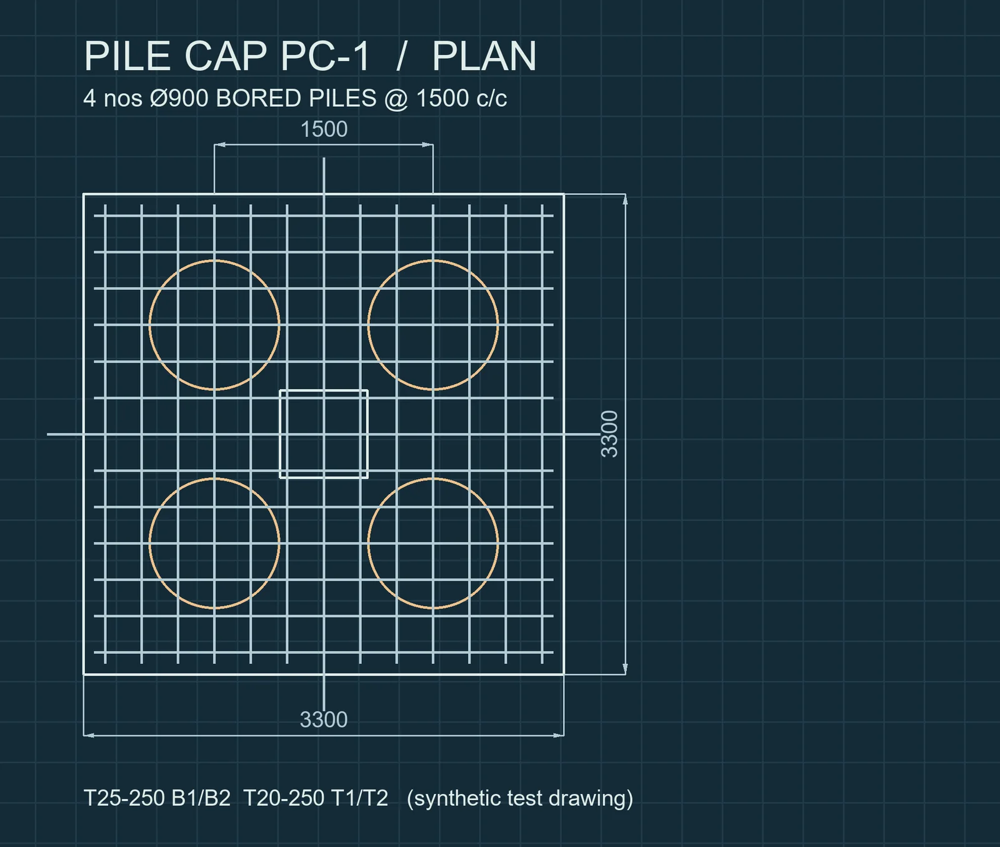

模組 02 · 空間與模型
CAD 詳圖驗算 Skill
把詳圖格式、設計核對重點和盲測步驟寫進 Skill，讓每次出圖都有可比較的基準。
成果設計要求 → 可比對詳圖


步驟、細節與工具
Skill 是寫給 AI 代理的出圖及核對說明。
- 盲測
- 盲測時先凍結試作並記錄 SHA-256，再與已批准圖則比對。
- 證明
- 可證明哪些內容在比對前已完成。
- 覆核
- 成品圖面正確性仍由工程師覆核。
盲測設計
- 凍結
- AI 先按 Skill 出圖，完成後立即以 SHA-256 記錄檔案指紋。
- 比對
- 之後才拿出已批准圖則比對；指紋證明試作在看到答案前已完成，不能事後修改。
- 覆核
- 差異列表交工程師審閱，成品圖面正確性由工程師負責。
整理要求
先列圖面格式和需核對的設計項目。
固定版本
在比對前凍結試作，以 SHA-256 記錄當時版本。
核對差異
對照已批准圖則，把差異交給工程師審閱。
- progeCAD
- AI Skills
- SHA-256